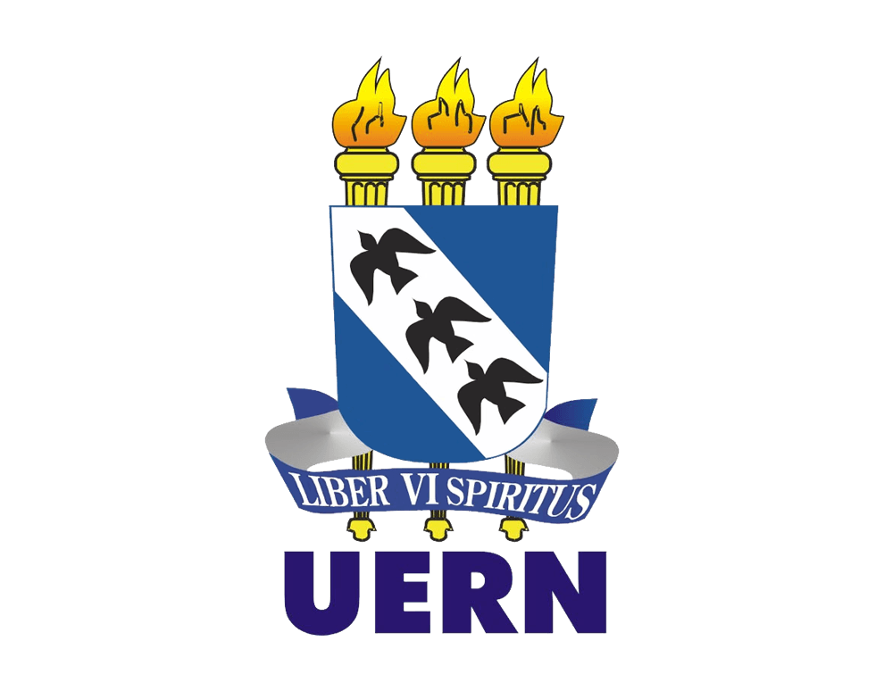

06/11/2007
Início do Curso de Ciência da Computação

Após algumas tentativas fracassadas de ingressar em uma Universidade,
consegui passar no Vestibular (sim, ainda tínhamos vestibular na época)
para o curso de Ciência da Computação na UERN (Universidade do Estado do
Rio Grande Norte).
Nesse dia, iniciei a minha jornada no mundo da programação, no referido
curso, ainda sem saber muito bem o que o futuro me reservava.